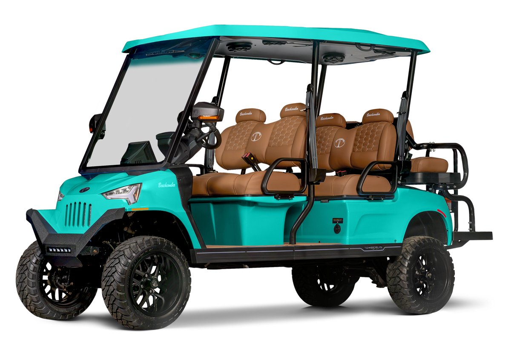

New Golf Carts / Tomberlin / Beachcomber
Color: Ultramarine

Tomberlin
Beachcomber
- 4 or 6 passengers
- Up to 25 mph
- Street-legal LSV
The Tomberlin Engage Beachcomber is a low-speed electric vehicle with a coastal design, 6-inch lift, and configurations for 4 or 6 passengers.
Golf Carts of Texas also installs custom accessories — lift kits, wheels, seats, lighting, sound and more. Browse our Accessories pages to see what we can add.
Specifications
| Motor / powertrain | AC powertrain, 17 hp, 450 amps |
|---|---|
| Top speed | Up to 25 mph |
| Battery | EVOLVE L210 Ah, 10 kWh lithium smart power system |
| Charger | Onboard 1-kilowatt charger; plugs into a standard wall outlet |
| Steering | Power steering (standard) |
| Brakes | Drilled front disc, rear drum hydraulic brakes; electric parking brake |
| Seat belts | NHTSA-approved 3-point seatbelts |
| Street-legal / LSV | Low-speed electric vehicle (LSV), designed to comply with NHTSA Low Speed Vehicle rules |
| Warranty | 5-year limited warranty |
| Width | 52.5 inches |
| Suspension | 6-inch lifted independent dual A-arm, with adjustable coil-over shocks |
| Wheels | 14-inch custom black aluminum |
| Tires | 23-inch AT; optional steel-belted radial |
| Body & roof colors | Brittany Blue, Ultramarine, Banana, and Spirited Aqua |
| Seat color | Cognac |
E4 (4 passengers)
| Passengers | 4 |
|---|---|
| Length | 132 inches |
| Width | 52.5 inches |
| Height | 82.25 inches |
| Weight | 1,355 pounds |
| Folding rear-facing seat | Not included |
E4+2 (6 passengers)
| Passengers | 6 |
|---|---|
| Length | 150 inches |
| Width | 52.5 inches |
| Height | 82.25 inches |
| Weight | 1,421 pounds |
| Folding rear-facing seat | MX folding rear-facing seat |
Specs per manufacturer.
Standard features
- NHTSA-approved 3-point seatbelts
- High-strength e-coated steel frame and upper structure
- Unique ignition key with locking steering column
- Tomberlin 360 connected system with battery monitoring and geolocation
- LED headlights with high-low beams, daytime running lights, and self-canceling turn signals
- Illuminated rocker panels
- Automotive LED taillights with reverse lights and a roof-mounted brake light
- Automotive-style side mirrors with illuminated turn signals
- Rearview camera with 7-inch color display
- Electric parking brake that locks the wheels when stopped, in park, or when the ignition is turned off
- Power steering
- Onboard 1-kilowatt charger
- 7-inch touchscreen infotainment with Apple CarPlay, Android Auto, Bluetooth, AM/FM, and 180 watts of power
- Digital instrument display
- Dual steering-column control levers
- Cabin heat and fresh-air ventilation
- Wireless cell phone charging
- Lockable oversized glovebox and covered central storage
- Integrated canopy headliner with rear-view mirror, map lighting, dome lighting, and integrated speakers
- CoolTouch luxury upholstery
- Lockable, double-opening trunk
- Premium seating featuring CoolTouch technology
- Premium infotainment system with 180 watts and integrated headliner speakers
- Teakwood-inspired mats
Available options & accessories
- Heated and cooled front seats (published as an upgrade on Engage models other than GTZ)
- Optional steel-belted radial tires
- Optional deluxe front bumper